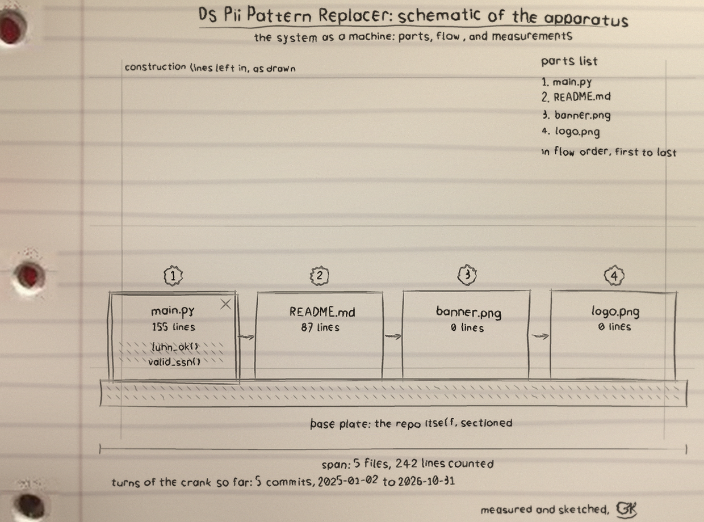

Hand me a text file and I hand it back with the people taken out: email addresses, phone numbers, Social Security numbers, and payment card numbers, each replaced by a plain token. The file stays useful. The people stay private.
This is the tool's own test fixture, the published test numbers and 555-range fiction its test suite runs on, and the exact output the tool produced from it. Use the button to flip the file.
Summary printed by the run: replaced 6 item(s): card=1, email=2, phone=2, ssn=1.
Notice what survived: the card number that fails its checksum, and the number ranges the Social Security Administration never issues. I redact people, not arithmetic.
Counts, never values. The matched data is never printed anywhere, not in the summary, not in an error.
Nothing found, nothing claimed. A file with no matches exits non-zero and no output is written. An untouched copy does not get to call itself cleaned.
The original is sacred. Point the output at the input file and I refuse, on the record, with exit code 2.
Cards must prove it. A candidate card number has to pass the Luhn checksum before it earns a redaction.
python3 main.py customers.txt --output customers-clean.txt
Python 3, standard library only. Limit the sweep with
--types email,phone, read from stdin with -
as the input, and take the summary as JSON with
--json. Full documentation:
the repository.
